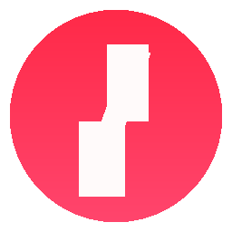

Your media, your groups
Drop in a folder of clips, export a pack for a friend, and keep Defaults locked. Undo a delete for 10 seconds.

InterruptorVideos, images, sounds, and jumpscares over your screen when you least want them. Built for focus training, dares, and staying awake.
Always the latest installer. If Windows warns that it’s unsigned, choose More info → Run anyway.
Drop in a folder of clips, export a pack for a friend, and keep Defaults locked. Undo a delete for 10 seconds.
Send an interruption to one display or several at once. Settings shows only the screens that are actually connected.
Freeze a session or skip a scare. Recaps stay on the dashboard after you close the popup, so last night is still there.